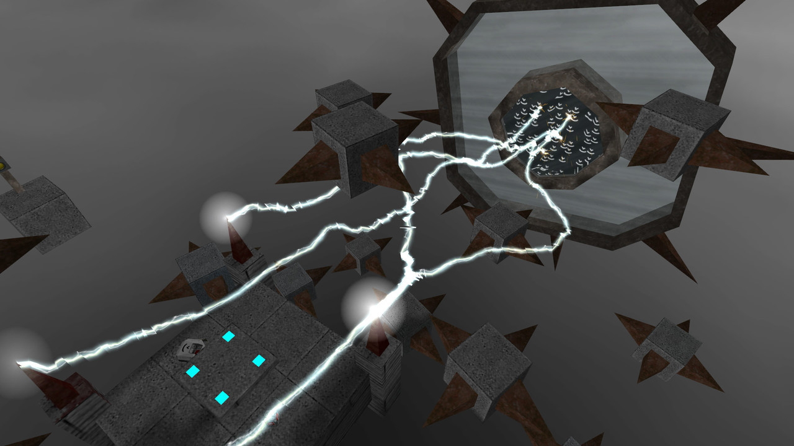

The Halfquake Trilogy is coming to Steam on October 5th as a free mod for Half-Life 1.
With around 15 hours of gameplay, the game is a collection of GoldSrc mods in which the player has to work through a series of highly brutal and inevitably deadly traps.